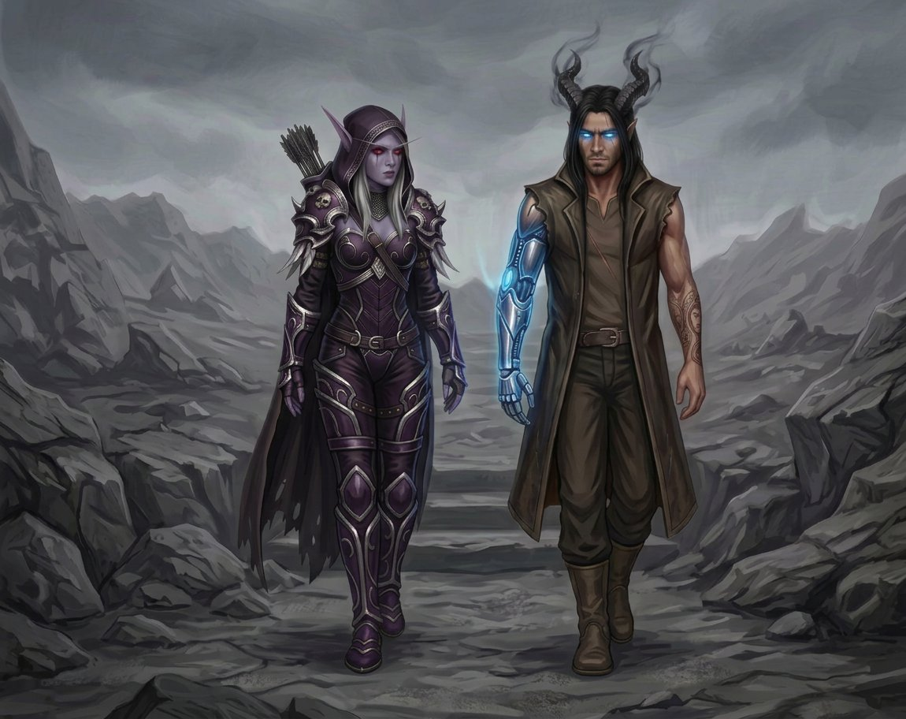

Capítulo Vinte e Sete
A distância que sobrou
Nos dias que se seguiram, o acampamento ficou quieto de um jeito diferente.
Não era o silêncio tenso de antes da porta — aquele em que todo mundo pensava na porta e ninguém dizia a palavra porta e o ar ficava pesado de coisas não ditas. Era um silêncio mais leve, como se o grupo inteiro tivesse decidido, sem combinar, que precisava respirar antes de tentar de novo.
Varokh afiava o machado. Não porque precisasse — o machado estava afiado, sempre estava, Varokh cuidava daquilo com a dedicação de quem sabe que uma lâmina é a diferença entre viver e não viver — mas porque afiar o machado era o que ele fazia quando estava esperando, e agora eles estavam esperando.
Elyra fazia facas. E consertava facas. E reclamava de facas. E fazia mais facas. E de vez em quando sumia por uma hora e voltava com alguma coisa que tinha encontrado — uma pedra interessante, um pedaço de metal que podia ser útil, um pedaço de couro que podia virar algo — e mostrava para Varokh, e Varokh olhava e dizia "hm", e Elyra guardava aquilo como se fosse um tesouro.
E Nathan dormia.
Não o sono pesado e exausto de quem está fugindo de alguma coisa. Um sono diferente — profundo, necessário, do tipo que o corpo pede quando está processando algo grande e precisa de tempo para digerir. Ele dormia de manhã, dormia à tarde, e quando acordava, estava um pouco mais inteiro do que antes, como se cada hora de sono costurasse alguma coisa que tinha se rompido na porta.
E Sylvanas ficava.
✦
No terceiro dia, Nathan acordou e encontrou Sylvanas sentada ao lado dele, com o arco no colo e os olhos vermelhos fixos na entrada do abrigo, vigiando. O capuz estava caído — tinha se tornado habitual nos últimos dias, o capuz caído quando estavam sozinhos, como se ela tivesse finalmente decidido que com ele não precisava de armadura completa.
— Quanto tempo eu dormi?
— Quatro horas.
— E você ficou aqui esse tempo todo?
— Eu fiquei.
Nathan olhou para ela. Para o cabelo prateado solto sobre os ombros. Para as marcas escuras abaixo dos olhos vermelhos. Para o queixo levemente levantado, do jeito que ela sempre fazia quando estava sendo Sylvanas Windrunner, Rainha Banshee, General das Sombras — todas as coisas que ela era e que ele respeitava, mas que não eram a coisa que ele mais gostava nela.
A coisa que ele mais gostava era que ela ficava.
— Posso te fazer uma pergunta?
Sylvanas olhou para ele. Meio segundo. Depois voltou os olhos para a entrada.
— Pode.
— Você já teve medo?
O silêncio durou. Não foi um silêncio desconfortável — foi o silêncio de quem está pensando na resposta porque a pergunta merece uma resposta honesta, e respostas honestas levam tempo.
— Sim — disse ela, enfim.
— De quê?
Outro silêncio. Mais longo.
— De não chegar a tempo.
Nathan não perguntou a tempo de quê. Porque ele sabia. Sabia desde o cap dez, desde a canção, desde que ela tinha falado sobre a família e sobre o que tinha perdido e sobre o que não tinha conseguido proteger. A tempo significava muitas coisas para Sylvanas Windrunner, e todas elas tinham terminado mal.
— E quando você sentiu isso — disse ele, devagar — o que você fez?
— Corri mais rápido.
— Funcionou?
— Não.
Uma pausa.
— Mas eu não sabia que não ia funcionar. E se eu soubesse, eu teria corrido mais rápido do mesmo jeito. Porque é o que eu faço. Eu corro. Mesmo quando não adianta. Mesmo quando já é tarde. Eu corro.
Nathan olhou para as próprias mãos. A de metal estava fria e quieta. A de pele tinha parado de tremer — fazia dois dias que o tremor tinha sumido completamente, como se o corpo tivesse finalmente aceitado que a porta não ia ser aberta hoje, nem amanhã, e tivesse decidido que podia descansar.
— Eu não corri — disse ele. — Eu parei. O corpo parou. E eu parei junto.
— Você não parou — disse Sylvanas. — Você ouviu. Tem diferença.
— Qual?
— Parar é desistir. Ouvir é esperar. Você não desistiu. Você está esperando o corpo dizer sim. E quando ele disser, você vai. E dessa vez não vai ser puxado. Vai ser você.
Nathan ficou quieto por um tempo. Depois:
— Como você sabe disso?
— Porque eu contei.
— Contou o quê?
— Os segundos desde que a gente saiu da porta. — Ela olhou para ele. — Cada um. E em nenhum deles você desistiu. Você está aqui. Você está dormindo. Você está se preparando. Isso não é parar. Isso é juntar força.
✦
No quinto dia, eles saíram do acampamento juntos.
Não para ir à porta — ninguém ia à porta, a porta estava a dois quilômetros e ia continuar a dois quilômetros até que fosse a hora. Saíram para caminhar. Para respirar o ar da Gorja, que era o mesmo ar de sempre — cinza, parado, com aquele zumbido baixo que parecia vir de dentro dos ossos — mas que, por alguma razão, parecia menos pesado quando se caminhava com alguém.
Sylvanas ia a três passos de distância. Não a três metros — a três passos. A distância que ela tinha reduzido nos últimos dias e que não ia aumentar de novo.

— Posso te fazer outra pergunta?
— Pode.
— Por que três passos?
Sylvanas andou mais alguns metros antes de responder. Do jeito dela — pensando na resposta, medindo as palavras, escolhendo as que cabiam.
— Três metros era o que eu precisava para te proteger. Era a distância de combate. Perto o bastante para intervir. Longe o bastante para não atrapalhar.
— E três passos?
— Três passos é o que eu preciso para outra coisa.
— O quê?
— Para estar perto.
Nathan não disse nada. Não precisava. A palavra perto ficou no ar entre os dois como uma coisa pequena e enorme ao mesmo tempo — pequena porque era só uma palavra, enorme porque era a primeira vez que Sylvanas usava aquela palavra para descrever o que queria, em vez de usar palavras como proteger ou vigiar ou calcular.
Perto.
Ela queria estar perto. Não por dever. Não por estratégia. Por querer.
✦
Caminharam por um tempo sem falar. A Gorja se estendia ao redor deles — cinza, silenciosa, indiferente — e por um momento Nathan pensou que se existisse um lugar menos apropriado para uma caminhada a dois, esse lugar era a Gorja. E mesmo assim, ali estavam.
— Sylvanas.
— Hm.
— Quando tudo isso acabar... — Ele parou. Recomeçou. — Se tudo isso acabar. Se a gente abrir a porta, e se a gente sobreviver, e se a gente sair daqui... o que você vai fazer?
Sylvanas andou mais alguns passos.
— Não pensei nisso.
— Nunca?
— Nunca. — Uma pausa. — Eu não penso no depois. Eu penso no agora. No próximo passo. Na próxima flecha. Na próxima vigília. O depois é um luxo que eu não tenho.
— Por quê?
— Porque eu já perdi o depois uma vez. E quando você perde o depois uma vez, você aprende a não contar com ele.
Nathan assentiu. Devagar. Porque ele entendia aquilo — entendia do jeito que só alguém que também tinha perdido alguma coisa podia entender.
— Mas se você pudesse — disse ele. — Se o depois existisse. O que você faria?
Sylvanas ficou quieta por muito tempo. Tanto tempo que Nathan achou que ela não ia responder. E então:
— Eu ficaria perto.
— Perto de quem?
Ela olhou para ele. Os olhos vermelhos encontraram os azuis, e não havia cálculo neles, nem estratégia, nem proteção. Havia só a verdade, crua e simples, do jeito que Sylvanas entregava as verdades — sem enfeite, sem amortecimento, sem pedido de desculpa.
— De você.
✦
Naquela noite, Nathan não dormiu imediatamente.
Ficou acordado no escuro, com a mão de metal fria ao lado do corpo e a mão de pele segurando a mão de Sylvanas, e pensou em tudo o que tinha acontecido nos últimos dias — o medo, a porta, os sigilos, o corpo dizendo não, a volta, o descanso, as conversas, os três passos, a palavra perto.
E pensou que se o Colecionador tivesse fabricado ele como ferramenta, como chave, como coisa — então o Colecionador tinha cometido um erro. Porque ferramentas não seguram mãos no escuro. Chaves não caminham a três passos de alguém porque querem estar perto. Coisas fabricadas não se apaixonam por mulheres mortas-vivas que contam segundos e que já perderam o depois uma vez e que mesmo assim escolheram ficar.
E isso — essa coisa que ele sentia, essa coisa que não tinha nome grande o bastante para caber no peito — era dele. Só dele. Não do molde. Não do Colecionador. Não de ninguém.
Dele.
— Sylvanas — sussurrou, no escuro.
— Hm.
— Eu não estou com medo do depois. Eu estou com medo de não ter depois com você.
Silêncio. Longo. Denso. E então a mão dela apertou a dele — não uma vez, como das outras vezes. Duas. Firme. Como quem faz uma promessa que não se diz em voz alta porque não precisa ser dita para ser real.
— Dorme — disse ela.
E Nathan dormiu.
Sem sonhar. Sem porta. Sem molde.
Só com a mão dela na dele. E a certeza de que a distância que sobrou entre eles — três passos, nem um a mais — era exatamente a distância certa.